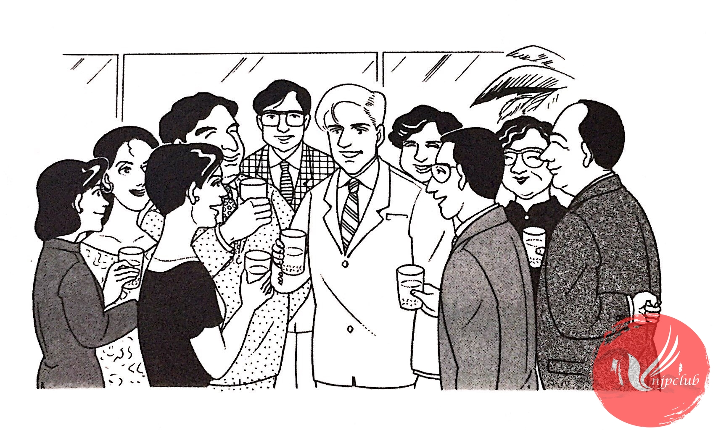

| 木村： |
転勤、おめでとう ございます。 |
| ミラー： |
ありがとう ございます。 |
| 木村： |
ミラーさんが 東京へ 行ったら、寂しく なりますね。 |
| 佐藤： |
そうですね。 |
| 木村： |
東京へ 行っても、大阪の ことを 忘れないで くださいね。 |
| ミラー： |
もちろん。皆さん、暇が あったら、ぜひ 東京へ 遊びに 来て ください。 |
| サントス： |
ミラーさんも 大阪へ 来たら、電話を ください。 |
|
いっしょに 飲みましょう。 |
|
| ミラー： |
ええ、ぜひ。 |
|
皆さん、ほんとうに いろいろ お世話に なりました。 |
|
| 佐 藤： |
頑張って ください。体に 気を つけて。 |
| ミラー： |
はい。皆さんも どうぞ お元気で。 |